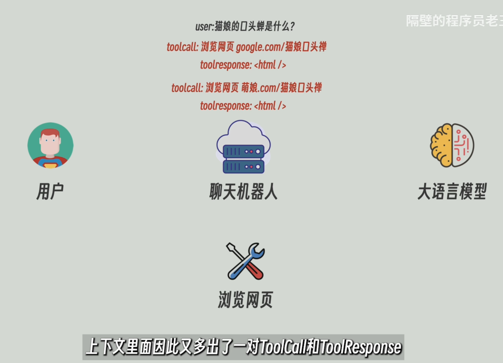
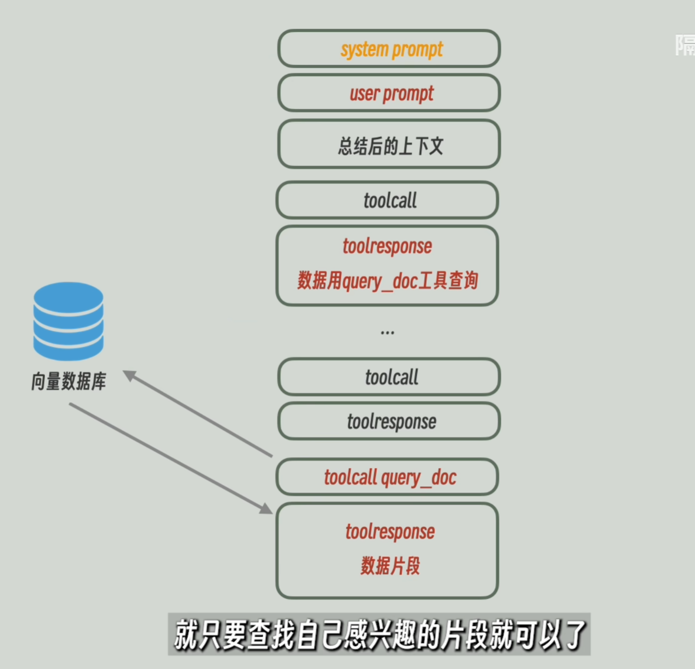

# 自我介绍
回答参考：
- 【基本情况】名称学历年龄一句话，原公司业务一两句，岗位和工作内容，个人技能。
- 【行业认知】对面试公司产品方案的理解，客户是谁，应用场景是什么，行业特点 / 认知、竞品、上下游。提前准备好，表现出你对这场面试是有准备的、对这家公司业务是有调研、对这个行业是有认知的，区别于盲目求职。
- 【个人规划】为什么想转行 / 跳槽，为什么投这家公司。
# 高可用、高可靠、容灾，这三个有什么区别？
高可靠：系统本身不容易坏
高可用：坏了也能继续服务；切到别的机器，用户几乎感觉不到
容灾： 整个机房挂了还能恢复
高可用通常解决单机或服务故障，
容灾解决的是机房级或地域级灾难。
# 为什么不卖裸金属，而是要虚拟化？
“面试官您好，这个问题非常经典。作为售前，我们在给客户推荐方案时，技术没有绝对的好坏，只有场景的适配 。我们之所以在绝大多数场景下主推虚拟化（或云化）而不是裸金属，主要是基于客户的商业价值、业务以及运维这三个核心维度来考量的。具体来说有以下几个原因：”
# 为什么要虚拟化？（打客户痛点）
# ① 降本：打破 “资源孤岛”，大幅降低 TCO（总拥有成本）
- 裸金属的痛点： 传统裸金属架构下，一台服务器通常只跑一个核心应用（One App, One Server），CPU 和内存的平均利用率往往只有 10%-20%，造成极大的硬件浪费。同时，机房空间、电力、制冷成本居高不下。
- 虚拟化的价值： 通过资源池化，我们可以把硬件利用率提升到 70%-80%。客户只需要买更少的物理机，就能跑更多的业务。这不仅节省了硬件采购成本（CapEx），还大幅降低了长期的机房运营成本（OpEx）。
# ② 增效：极致的业务敏捷性，缩短 TTM（产品上市时间）
- 裸金属的痛点： 如果业务部门需要上线新系统，采用裸金属意味着：提采购流程 -> 等待物流 -> 硬件上架 -> 连线 -> 装系统，整个周期可能长达几周甚至几个月。
- 虚拟化的价值： 虚拟化实现了软件定义。交付一台虚拟机只需要几分钟。业务高峰期可以秒级弹性扩容，业务低谷期可以回收资源。这让 IT 部门从 “业务的瓶颈” 变成了 “业务的加速器”。
# ③ 控险：硬件解耦，保障极高的业务连续性（HA/DR）
- 裸金属的痛点： 硬件终究会坏（主板坏、内存宕）。在裸金属环境下，硬件宕机意味着业务中断，恢复起来非常耗时。
- 虚拟化的价值： 虚拟化将操作系统和底层硬件解耦了。通过热迁移（Live Migration）、高可用（HA）、快照等技术，即使底层某台物理机冒烟了，虚拟机也能自动在另一台物理机上拉起，甚至做到用户无感知。这种级别的容错和灾备能力，纯裸金属是很难低成本实现的。
# ④ 运维：统一管理，降低运维复杂度
- 管理 100 台裸金属和管理 1000 台虚拟机是完全不同的概念。虚拟化平台提供了统一的控制台（单点登录、统一监控、自动化运维脚本），大幅降低了 IT 人员的运维压力，让他们有精力去关注更贴近业务的上层创新。
# “不（全）卖” 裸金属？（谈场景边界）
“当然，作为一名客观专业的售前，我并不会说裸金属一无是处。我们不主推裸金属，是因为它不适合‘普适性’的业务，但它在特定场景下依然是不可替代的。 如果客户有以下需求，我依然会向他们推荐裸金属方案：”
- 极致的性能要求： 比如核心的 Oracle RAC 数据库、大型高频交易系统（量化交易），虚拟化层（Hypervisor）带来的 3%-5% 的性能损耗是客户无法忍受的。
- 特殊的硬件依赖： 某些特定的高性能计算（HPC）、重度 GPU 渲染、或者需要直通特定物理外设的场景。
- 严苛的合规与安全物理隔离： 某些金融或政务客户，受限于监管要求，某类数据必须存放在绝对物理隔离的服务器上，不能与其他业务共享物理资源。
(注：现在也有 “裸金属云 / BMS” 的概念，如果面试官追问，你可以补充说现在的云厂商也提供自动化交付的裸金属服务，结合了物理机的性能和虚拟机的敏捷，这是技术演进的结果。)
# 总结升华（展现售前价值观）
“总结来说，我们卖的不是虚拟化软件，也不是物理服务器，而是解决客户问题的方案。 虚拟化能解决 80%-90% 的企业日常 IT 痛点，带来最高的 ROI（投资回报率），所以它是我们的主力方案；而对于剩下 10%-20% 的核心高并发、高合规场景，我们会用裸金属去托底。为客户设计‘虚拟化 + 裸金属’的混合架构，实现成本与性能的最优解，这才是售前的核心价值所在。
# 百度专项
制造业，政务，交通
# 概念
昆仑芯 P800： AI 加速芯片（NPU 类）
“开物” 工业互联网平台、“文心” 大模型、“千帆” 大模型平台、百舸异构算力平台
3C：3C 电子行业，计算机、通信、消费电子
ERP：管接订单、算物料、排计划
MES：制造执行系统，管车间现场怎么把产品造出来
PLC / 设备：管机器怎么动
# 产品体系

# 怎么把一个 72B 的模型在云上部署
- 算显存，72B 模型如果用常规的半精度（FP16）加载，大约需要 144GB 的显存。考虑到推理时还需要上下文缓存（KV Cache），单张主流的 80G 显卡（比如 A100/H100）肯定是放不下的。因此，我会选择多卡张量并行（TP） 的方式，至少需要 2 到 4 张 80G 的 GPU 卡组成一个推理节点。
- 选平台，平台内置了丰富的模型环境镜像，支持一键部署，能帮客户省去繁琐的 CUDA 环境配置时间，实现快速验证和上线
- 补齐短板，强调网络与存储，大模型推理对网络和存储的要求极高，CFS 分布式存储，VPC 网络
# MCP
MCP（Model Context Protocol）就是：让大模型 “安全、标准地调用外部工具和数据” 的协议。
因为有的 tool 很多 agent 都需要，所以将 tool 作为服务托管在云端，然后 agent 来调用

MCP 定义了 server 和 client 的
- 通信格式（如何通信）
- server 中有什么接口（查询有那些 tool、tool 的功能描述、需要的参数）
MCP server 还可以提供数据、文协读写服务（resources）、提示词模板（prompt）
MCP server 可以在 agent 的本机部署，使用 stdio 通信；也可以部署在网络上，通过 HTTP 通信
# 上下文工程
提示词工程（Prompt Engineering）：通过系统提示词和用户提示词的组合，引导 ai 返回特定风格回复
在提示词举例子：few-shot
只行为约束，无例子：zero-shot
ai 自己分解任务，一步步推理：COT 思维链
上下文：和 ai 的对话记录实际保存在 agent 处，这个被一次性发给 AI 的完整的历史记录被称为上下午 context
上下文管理：如何管理和修改这段历史记录的技巧，主要由于 agent 能自己调用 tool 了，用户无法直接管理上下文

- 增加记笔记 tool

transformer 架构对输入的开头结尾信息很敏感
- 裁剪压缩 prompt
- 丢掉较老信息
- 大模型对较老信息做 summary
- 较长 toolresponse 处理后存入临时向量库，用 query_doc 工具查询
- 优化工具返回值，比如扔掉不必要的 html 标签

# 售前和开发什么区别
KPI 不同
售前：以成单，推进项目，赋能销售（更抽象），对客户业务理解
开发：写代码开发 api，需求的按时完成（产出），可以量化
# 售前不被 ai 取代的原因
日常工作上：客户汇报等接触交流场景（尊重，核心），写文档等书面工作（提效）
解决方案上：结合客户业务场景（新场景，最核心），AI 没法设计新场景（必须使用本地知识库）
腾讯：生态最好，B2C，微信企微，零售电商
阿里：对高并发、性能、底层研究投入多，性能最好
字节：后发，AI 大模型超强
# 销售、售前、售后
销售：皮实、人际关系交往
售前：逻辑思维、清晰表达，持续学习（从自家产品到整个行业）
售后：（包含交付、项目经理、实施开发测试），沟通能力要强，具体定位见下述章节
# 从具体业务流程梳理
销售签了合同，30% 首付，初次验收再打款 40%，终验 20%，尾保款 10%
然而除了首付，收回验收款、尾款的进程往往是很难的，主要面临三个问题：
- 产品不行
- 交付不行
- 客户领导变了
# 售后的具体定位
因为我目前在火山引擎 CSM 实习，我要明确售后的具体职责：
- 控制项目交付风险，不要发生需求变更、蔓延
- 能够及时高质量完成自己工作（完成领导派下来的活），保障项目的里程碑及时，推动项目及时上线和回款（回款是销售干，前提是活要干完）
- 交付过程中持续提高客户满意度，挖掘潜在商机，配合商务（客户成功经理，特殊销售）完成 2、3 期需求引导和商机挖掘
- 控制项目交付成本，提高利润率（比较空泛）
# 我为什么先做售后再做售前
售前工作吃技术，直接上手不稳，先成为产品专家，触类旁通的，先上手，后面更有谈资
todo: 等刀老师补充话术